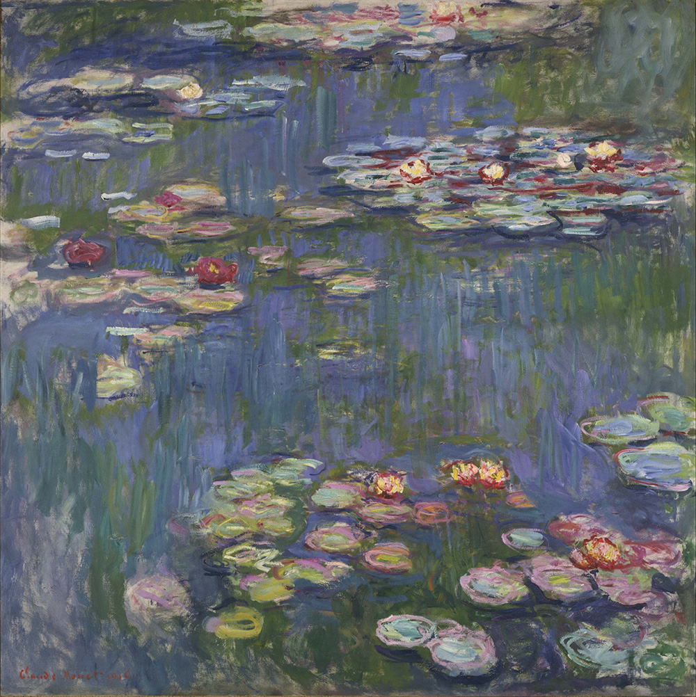

作品名 「睡蓮」
花言葉 「信仰」「清純な心」「信頼」「甘美」「優しさ」
睡蓮
「清純な心」
花名のスイレン（睡蓮）は、この花が夕方に閉じる（睡る）ことに由来するといわれます。スイレン（睡蓮）とハス（蓮）は混同されやすい植物ですが、見分けるには葉の形を見るのが簡単です。葉に切れ込みがあるのがスイレン、切れ込みがないのがハスになります。また、スイレンは水面近くで咲き、ハスの花は水面より高く上がり咲きます。水底の泥の中にある根茎から水面に立ちあがり空に向かって咲く汚れのない白い花の姿が由来し「清純な心」という花言葉がついたとされています。
睡蓮
クロード・モネ
フランスの印象派クロード・モネによる油彩画シリーズである。フランスのジヴェルニーにある彼の自宅の花壇を描いたもので、池に浮かぶ睡蓮を中心に描かれている。自然界に存在する光と色の戯れを表現することに重点を置き、柔らかな雰囲気の絵画として知られている。モネはこのシリーズに数年間取り組み、合計で約250点の作品を制作した。「睡蓮」シリーズはモネの最高傑作のひとつとされ、現在でも最も有名で人気のある作品のひとつである。花や水面の影に見られる、細部を大胆に省略した表現は、後の表現主義や抽象絵画にもつながる、モネの革新性を示すものといえます。
| 作品名 | 睡蓮 |
| 作者 | クロード・モネ |
| 制作年 | 1916年 |
| 種類 | キャンバス・油彩 |
| 寸法 | 200.5cm x 201cm |
| 所蔵 | 国立西洋美術館 |